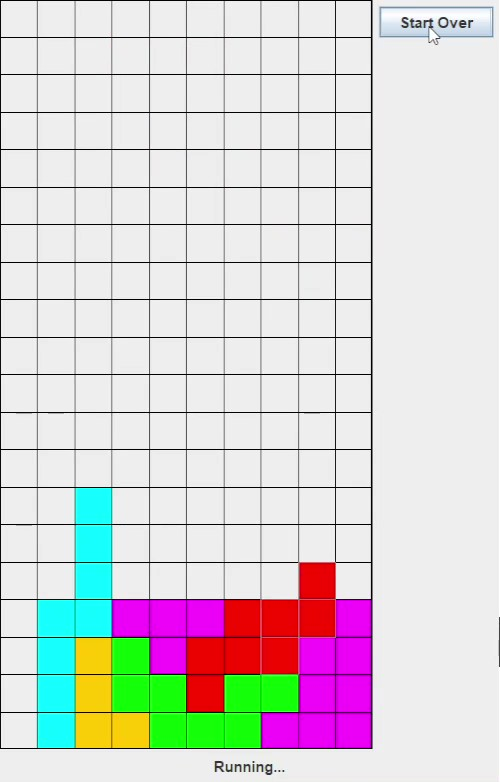
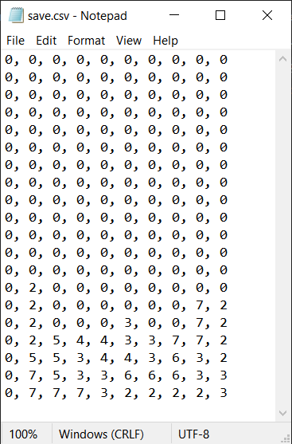
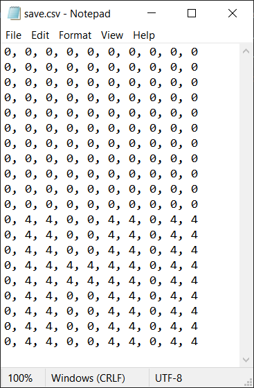

A CIS 120 project where we utilized Java and the Swing GUI framework to construct a playable version of the game Tetris. It supports multiple line clearing, displaying upcoming pieces, and allows for pausing or restarting. It also supports saving, so if you exit the game and come back, your progress is saved.
This is how the data is saved.
 ➔ Which means, theoretically, that data can be loaded in, like this:
 ➔See code here